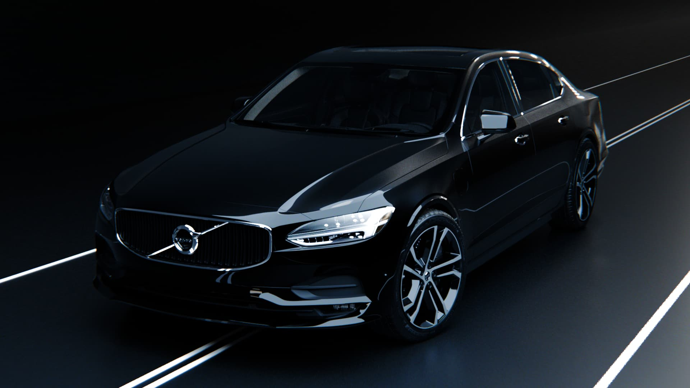
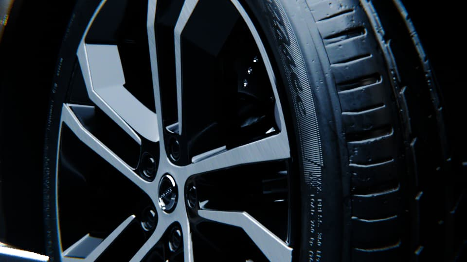
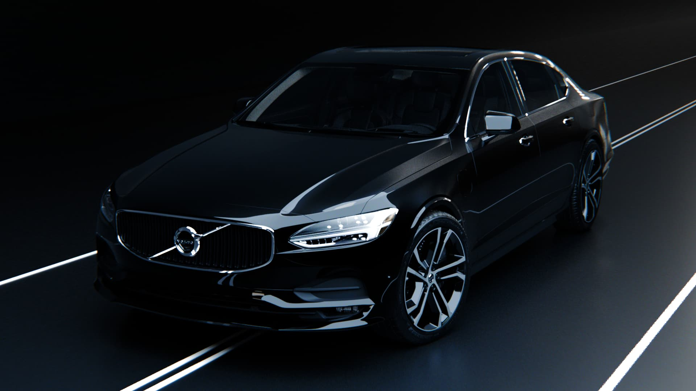
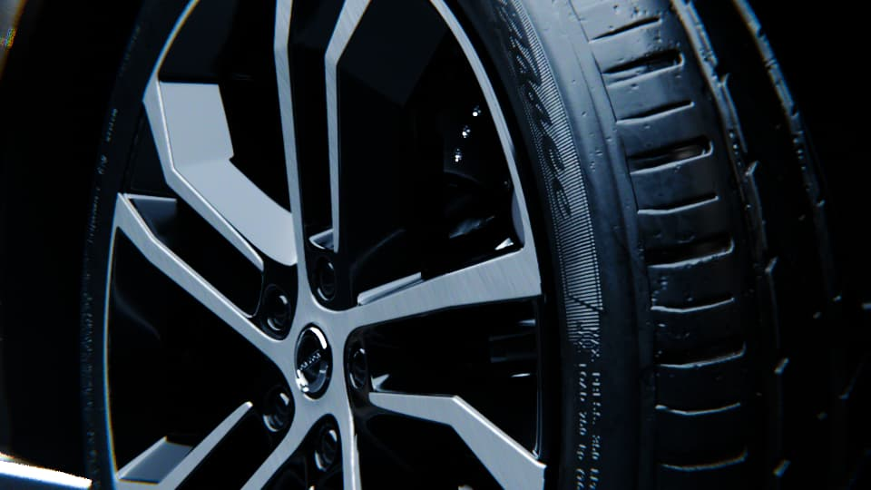

Live Events


For 4+ years, I've delivered high-impact 3D assets and real-time visuals for major live events. My work combines technical precision with creative storytelling, creating immersive experiences that engage audiences on a massive scale. From architectural projections to motion graphics for stages, I bring dynamic visual concepts to life.


 


